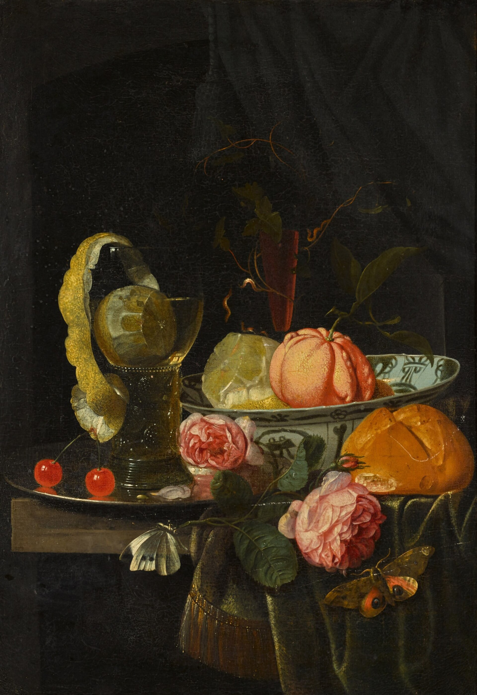
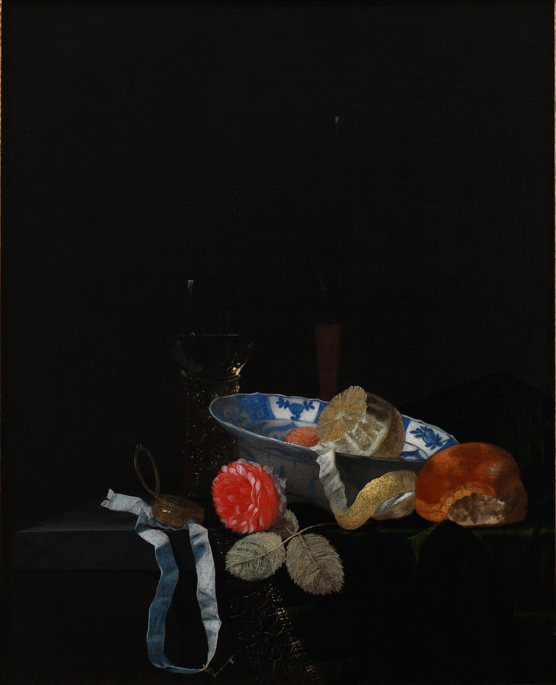
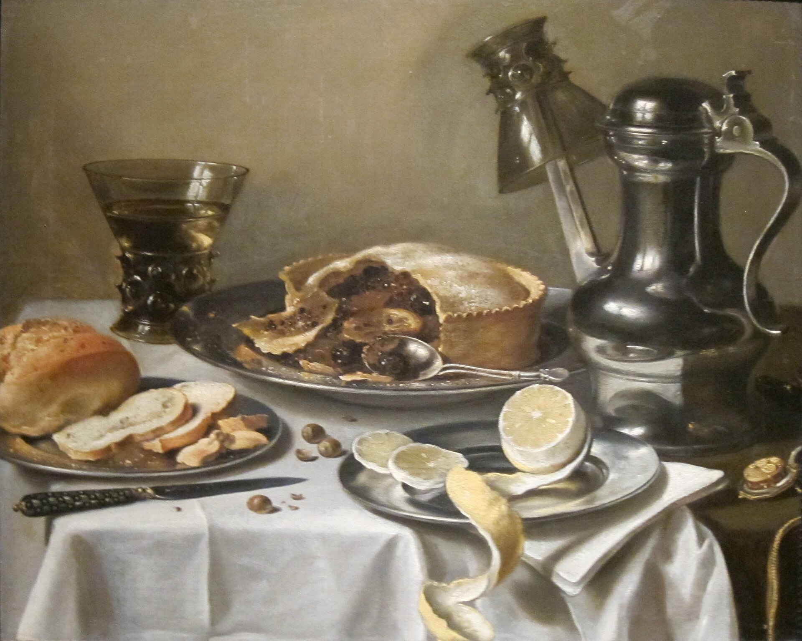
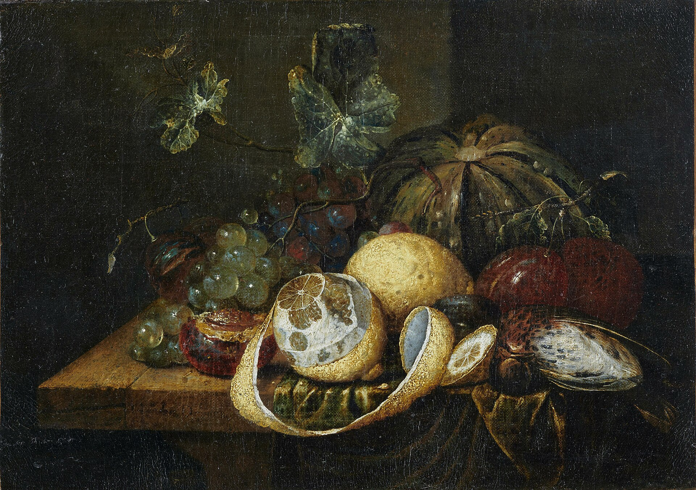

I write the opening and then I stop. The second page is yours.
A start has one job. It has to be specific enough that the next sentence can exist. I will not write that sentence.
People send the thing that will not begin. A shop with nothing on the glass. A talk with no first line. A letter rewritten into nothing.
You get one page. I take the next one on Monday morning. It is finished when it can be left.
Mara Voss
Opening pages



A peeled lemon with plums and grapes on a draped table. Attributed to G. van Deynum, about 1655.

Mondays. One page.
Monday morning. One page, then it is yours.
begin@